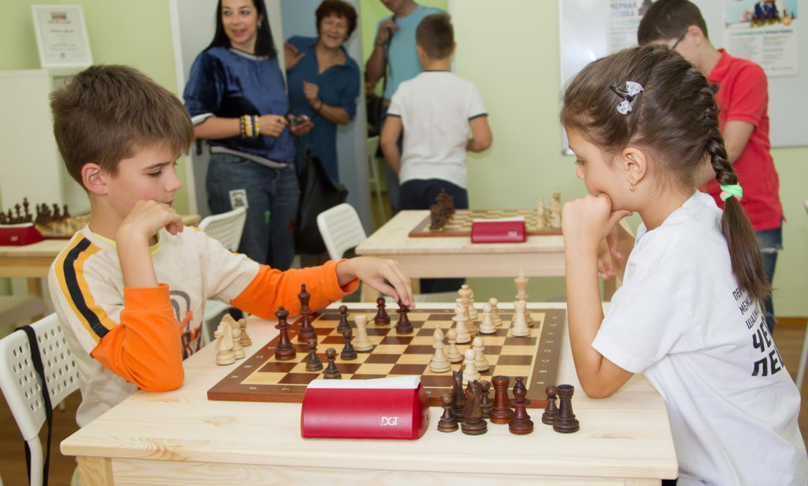

Занятия
Шахматы – уникальное явление в истории человеческой цивилизации. Игра, вобравшая элементы науки, искусства и спорта, заставляющая вот уже более полутора тысяч лет упражнять умы и гореть сердца миллионов. Шахматы не только способствуют развитию интеллекта и памяти, тренируют психологическую устойчивость, умение конкурировать с равным противником, но и воспитывают необходимые для нашего динамичного времени коммуникативные и лидерские качества.
Игра в шахматы для детей – это мощный толчок в развитии: дети раскрываются, становятся общительными и целеустремленными. Шахматы отвлекают ребенка от гаджетов, заполняют свободное время с пользой для мозга. Дети, которые играют в шахматы, лучше учатся в школе. 67% родителей наших учеников подтвердили повышение успеваемости ребенка в школе уже после месяца занятий по шахматам. Многие любители игры в шахматы становятся отличными бизнесменами, выдающимися учеными, успешными руководителями.
Занятия шахматами для детей очень полезны, они развивают личность:
- Тренируют мозг и повышают интеллектуальные способности;
- Развивают логическое и абстрактное мышление, аналитические способности;
- Включают в работу оба полушария мозга одновременно;
- Усиливают концентрацию внимания;
- Вырабатывают усидчивость – игра может растянуться не на один час, а концентрация внимания нужна на протяжении всей партии;
- Улучшают память: долговременную и оперативную, визуальную и цифровую;
- Учат творчески мыслить – мозг учится принимать решения в нестандартных ситуациях;
- Учат анализировать, предугадывать и прогнозировать события – игрок должен просчитывать на несколько ходов вперед;
- Развивают лидерские качества;
- Повышают уровень успеваемости и позволяют добиться успехов в учебе и в жизни;
- Учат принимать взвешенные решения и отвечать за свои поступки;
- Закладывают основы умения решать конфликты;
- Воспитывают характер и силу воли – учат одерживать победы и достойно принимать поражения, извлекая ценный опыт.
Результаты обучения:
У детей от 3 до 5 лет• Улучшается память• Увеличивается скорость восприятия материала• Развиваются навыки счета• Прививается логическое мышление• Развиваются навыки простейшего анализа• Ребенок становится целеустремленным
У детей от 5 до 8 лет• Развивается умение концентрироваться• Улучшается память• Прививается стратегическое мышление• Увеличивается скорость принятия решений• Воспитывается настойчивость и воля к победе• Появляются новые друзья-интеллектуалы
У детей от 9 до 14 лет• Развивается творческое мышление• Происходит работа над характером• Увеличивается скорость принятия решений• Вырабатывается привычка проводить время с пользой для ума• Появляется совместный досуг с родителями